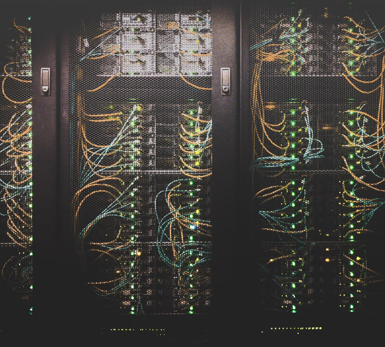
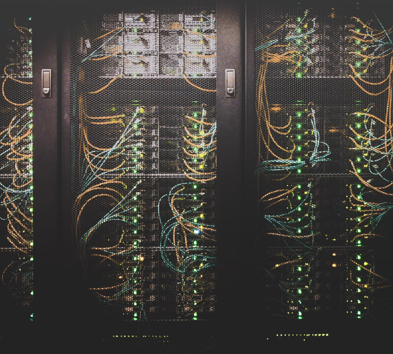

Are your OT systems prepared for hacking attacks?
Find out if your OT systems and machines are protected against cyber attacks with penetration tests, hacking simulations and security analyses from anbit.
We are member of the digitalHUB Aachen Germany
 

Be prepared for hacking attacks
We find vulnerabilties in your IT infrastructure to protect you from data theft & production downtime
98% of IoT traffic is not encrypted
cost of recovering:
min. 150.000 $ (small cap)
~ $4 million per company (large cap)
IoT devices are attacked on average 5,200 times per month
Our services
OT security in industrial IoT
Operational Technology significantly increases your competitiveness, but requires strong security measures due to the many possible access points for hackers. We offer a wide range of OT security solutions to secure your endpoints, networks and industrial assets. Among other services, we also analyze and protect your SCADA and ICS systems. The focus is on a solution tailored to your needs.
Get in touchIoT OWASP Top 10 audit
To optimally secure your OT assets we check your machines and applications for weak, guessable or hard coded passwords, insecure network services, insecure ecosystem interfaces, lack of secure update mechanism, use of insecure or outdated components, insufficient privacy protection, insecure data transfer and storage, lack of device management, insecure default settings und lack of physical hardening. The security issues that we analyze are constantly updated and adapted to current threat types.
Learn more about OWASP Get in touchConsultancy
We are happy to advise you on the many possible uses and security options for OT. For an initial consultation, we will remotely analyze your networks, ASPI structures and key personnel. For a comprehensive in-depth report, we analyze your systems on-site for a few days. Afterwards, you receive an evaluation report that includes the current status with an overview of the asset inventory, threats, vulnerabilities, and remediation actions to close the gaps.
Get in touchIT-OT convergence
To protect the increasingly converging OT and IT networks in the best possible way, these two networks must be logically separated from each other. We identify all malicious activities in your network traffic. In addition, we protect and organize your networks. We also detect any attempt to access your system and automatically send an alert. With our service, you can comply with NGFW policies, control access, isolate your infrastructure into zones, encrypt your system via SSL and benefit from many other protection measures.
Get in touchOT security monitoring
As networks continue to converge, you need to have a complete overview of IT and OT/IoT connections to ensure a high level of security. This is the only way to establish protection against threats in the right places. We identify all assets, document how they communicate and classify them. This allows us to detect and defend against all threats. You can even get information about the networks from the customer's point of view and this during the whole project. In addition, you can monitor ICS and other networks and processes in real time. Our fast-to-implement custom solutions with their dynamic architecture automatically detect threats based on rules and signatures, and fix errors quickly.
Get in touchIIOT security analysis
anbit analyzes your IIoT or CPS system for its security and identifies gateways for hackers. Even thermostats, cooling systems, a variety of sensors, cameras and process controls can provide gateways for hackers. We compile an overview of the threats to your company and point out specific security measures. In a second step, we implement these measures and fix all vulnerabilities. Different AI/ML techniques including deep representation learning, Snapshot Ensemble Deep Neural Network (SEDNN), federated learning and multi-stage learning protect you in the best possible way.
Get in touchOT Security tailored to your needs
We create a security strategy for you - tailored to your needs and your individual security gaps. Act preventively before it is too late and hackers have tried to attack you. Successful cyberattacks result in the loss of money or the theft of personal, financial and business information. These attacks damage both your business and personal reputation and security. The average cost to recover from an attack and secure the system is about $4 million per company. We help you to implement a sustainable cybersecurity strategy in your company to protect it in the best possible way.
Get in touchSecure your OT assets & machines
Would you like to protect your OT systems from hacker attacks? Leave your contact details and we will arrange a meeting to talk about implementing your OT security strategy.